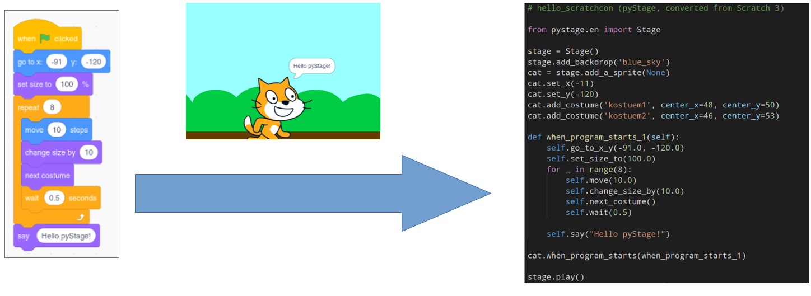
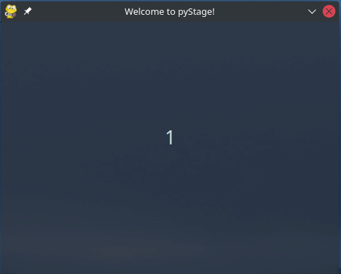

Scratch tipo programavimas Python kalba
PyStage sujungia Scratch ir Python. Tai Python biblioteka, kuri visus Scratch blokus pateikia kaip Python metodus, ir konverteris, kuris tavo Scratch projektus paverčia Python kodu. Grafika ir garsas veikia su PyGame.
1. Įdiek
Viena komanda, Python 3.10 ar naujesnė versija. Lietuviška API kol kas yra tik išankstinėje versijoje.
pip install --pre pystage
2. Konvertuok savo Scratch projektą
Įkelk projektą arba .sb3 failą ir gauk paruoštą paleisti Python projektą.
Konvertuoti projektą3. Skaityk dokumentaciją
Visi blokai kaip veikėjo ir scenos metodai, su Scratch blokų pavadinimais lietuvių kalba.
Atverti dokumentacijąScratch blokai, parašyti Python kalba
Kiekvienas Scratch blokas turi atitinkamą metodą. Scenarijai, kurie prasideda įvykio bloku (pavyzdžiui, „kai spusteli žalią vėliavėlę“), tampa funkcijomis, kurias sieji su tuo pačiu įvykiu. PyStage atnaujina ekraną po kiekvienos ciklo iteracijos ir po tokių blokų kaip palauk_sek. Todėl tavo kodas veikia kaip Scratch scenarijus ir tau nereikia rašyti žaidimo ciklo.

| Scratch blokas | PyStage (lietuviška API) |
|---|---|
| kai spusteli žalią vėliavėlę | veikėjas.kai_spusteli_žalią_vėliavėlę(funkcija) |
| kai paspaudi d | veikėjas.kai_paspaudi_klavišą("d", funkcija) |
| eik 10 | veikėjas.eik(10) |
| pasisuk ↺ 90 laipsnių | veikėjas.pasisuk_kairėn_laipsnių(90) |
| x padidink 10 | veikėjas.x_padidink(10) |
| palauk 1 sek. | veikėjas.palauk_sek(1) |
| sakyk Labas! | veikėjas.sakyk("Labas!") |
Pilnas pavyzdys
Ši programa sukuria sceną ir joje veikėją. Funkcijos yra kodo blokai, kurie atitinkamais metodais susiejami su įvykiais (Scratch programoje tai įvykių blokai).
from pystage.lt import Scena
scena = Scena()
scena.pridėk_foną("grid")
zombis = scena.pridėk_veikėją()
def daryk(zombis):
zombis.sakyk("Labas, pyStage!")
for i in range(4):
zombis.eik(10)
zombis.palauk_sek(1)
zombis.galvok("Tai nuostabu!")
zombis.pasisuk_kairėn_laipsnių(90)
zombis.palauk_sek(1)
zombis.galvok("")
zombis.sakyk("Judink mane klavišais W, A, S ir D.")
zombis.kai_spusteli_žalią_vėliavėlę(daryk)
def dešinėn(zombis):
zombis.x_padidink(10)
def kairėn(zombis):
zombis.x_padidink(-10)
def aukštyn(zombis):
zombis.y_padidink(10)
def žemyn(zombis):
zombis.y_padidink(-10)
zombis.kai_paspaudi_klavišą("d", dešinėn)
zombis.kai_paspaudi_klavišą("a", kairėn)
zombis.kai_paspaudi_klavišą("w", aukštyn)
zombis.kai_paspaudi_klavišą("s", žemyn)
scena.paleisk()
Ir štai rezultatas:

Kodėl PyStage?
- Eksportuok savo Scratch projektą į tikrą, vykdomą Python kodą.
- Padėk programavimo pradedantiesiems mokytis Python „per Scratch“.
- Scratch blokai keliomis kalbomis, o tai puikiai tinka vaikams. Šiuo metu: anglų, vokiečių ir lietuvių.
Trumpas pristatymo vaizdo įrašas

Žiūrėk mūsų trumpą PyStage pristatymą ScratchCon 2021 (atsidaro YouTube, anglų kalba).